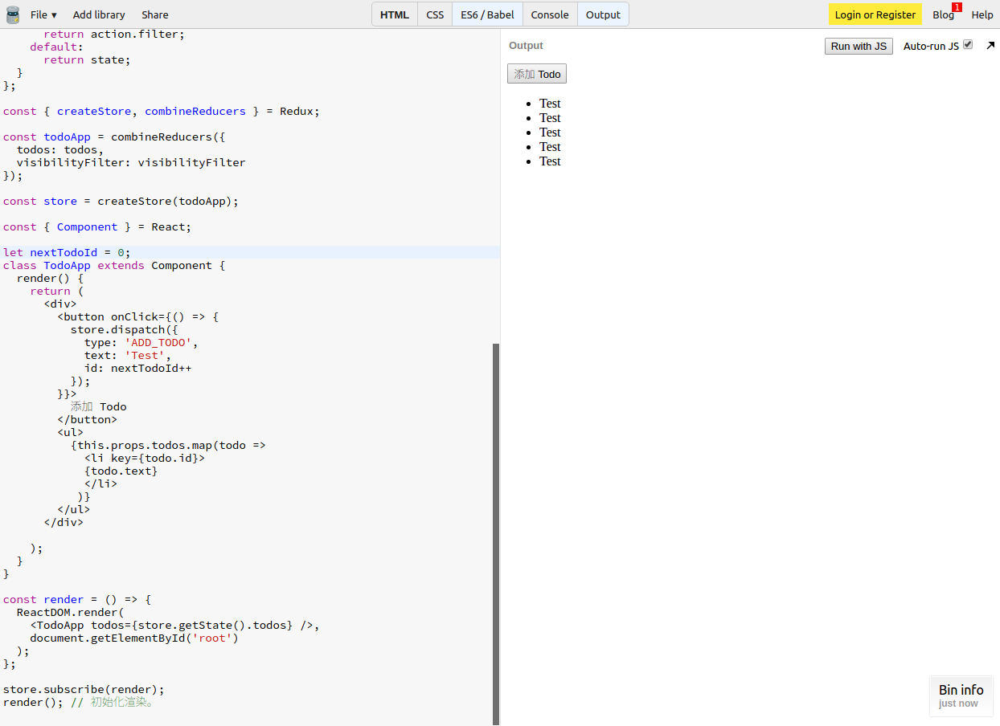
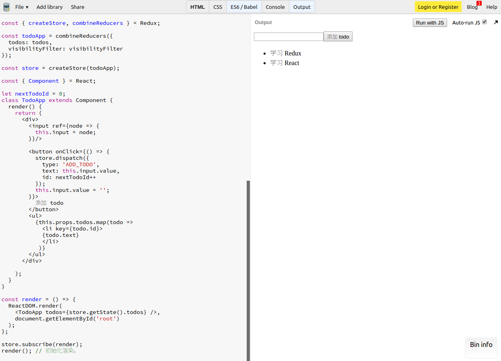

本节使用到的环境：https://jsbin.com/bavude/edit?js,output
环境
- 包括之前写的 todo 应用的 reducers.
- 引入 UMD 版本的 React 和 React-DOM。
渲染 todo 列表
我们之前已经写好了三个 reducer 并通过 combineReducers 将他们组合起来。
现在可以尝试实现视图层了。我们将使用 React 实现这个例子。
我们把渲染的逻辑放在最下面。
const render = () => {
ReactDOM.render(
<TodoApp />,
document.getElementById('root')
);
};
store.subscribe(render);
render(); // 初始化渲染。我们可以使用 ES6 的 class 关键词来创建一个 React 组件，这个组件将渲染出一个 div, 在这个容器内有一个“添加 todo ” 的按钮：
const { Component } = React;
let nextTodoId = 0;
class TodoApp extends Component {
render() {
return (
<div>
<button onClick={() => {
store.dispatch({
type: 'ADD_TODO',
text: 'Test',
id: nextTodoId++
});
}}>
添加 Todo
</button>
</div>
);
}
}注意我们这里直接指定了 (hard-coded) 新建 todo 的 text 属性，它应该由用户填写的，但这里为了保持简单先放着。
我们还需要使用惟一的 id 属性去标记不同的 todo. 这里使用了一个全局变量 nextTodoId.
当然我们还要渲染出 todo 列表, 假设我们会通过 props 传入 todos 数据：
class TodoApp extends Component {
render() {
return(
<div>
{/* <button ...>...</button> */}
<ul>
{this.props.todos.map(todo =>
<li key={todo.id}>
{todo.text}
</li>
)}
</ul>
</div>
);
}
}最后我们需要在渲染的时候传入 todos 作为 TodoApp 的 props.
const render = () => {
ReactDOM.render(
<TodoApp todos={store.getState().todos} />
document.getElementById('root')
);
};
让用户输入 todo
现在已经可以做到添加 todo 和显示 todo 列表了，但是我们不能总是添加无意义的 todo. 我们应该让用户输入 todo 的内容。
通过使用 React 提供的 ref 组件属性, 我们就可以得到组件的引用并取得其中填入的值：
class TodoApp extends Component {
render() {
return(
<div>
<input ref={node => {
this.input = node;
}}/>
<button onClick={() => {
store.dispatch({
type: 'ADD_TODO',
text: this.input.value,
id: nextTodoId++
});
this.input.value = '';
}}>
添加 Todo
</button>
{/* <ul ...>...</ul> */}
</div>
);
}
}现在我们可以输入 todo 项了

总结
就像之前的计数器一样，我们使用了 React 进行页面渲染。
整个应用大体是这样的：
todoApp
reducer: 组合多个reducertodos
reducer: 用于计算 todo 列表的状态。ADD_TODO动作: 添加一个 todo.TOGGLE_TODO动作： 切换 todo 的完成状态。
visibilityFilter
reducer: 用于计算过滤器的状态。SET_VISIBILITY_FILTER动作： 切换过滤器。
store: 管理应用的所有状态
- todoApp 作为参数用作计算状态变化。
TodoApp 组件：包裹所有东西
输入框：输入 todo 内容
- 使用 ref 属性储存组件引用。
“添加 Todo ” 按钮
- 点击事件：获取输入框的值并分发一个 'ADD_TODO' 动作，清空输入框内容。
todo 列表
- 从
props获取todos状态。 - 用列表渲染每一个 todo.
- 从
- render 方法：渲染 TodoApp 到页面
- 从
store获取todos状态 - 将
todos状态传入 TodoApp - 订阅
store用于每次状态改变更新视图
- 从
我们会发现其实整体的结构跟计数器的非常相似。每一部分的分工十分明确。比如“添加 Todo ” 按钮并不知道 todo 具体是怎么添加的，这就是 Redux 带来的好处。